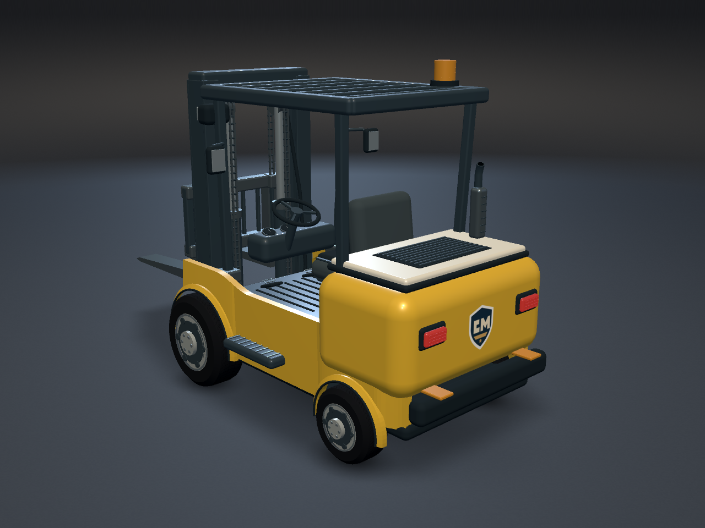
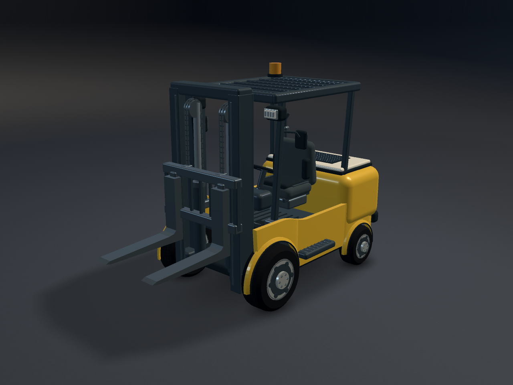
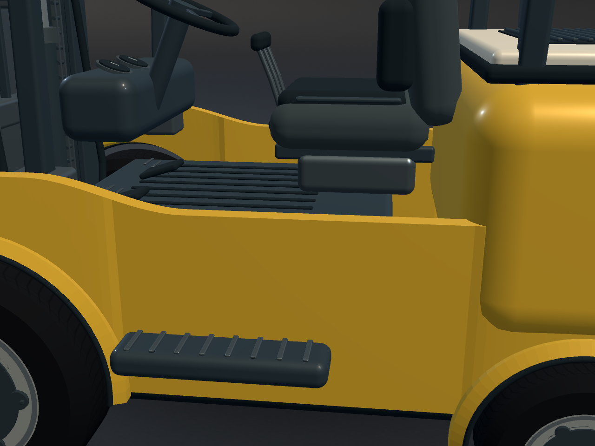
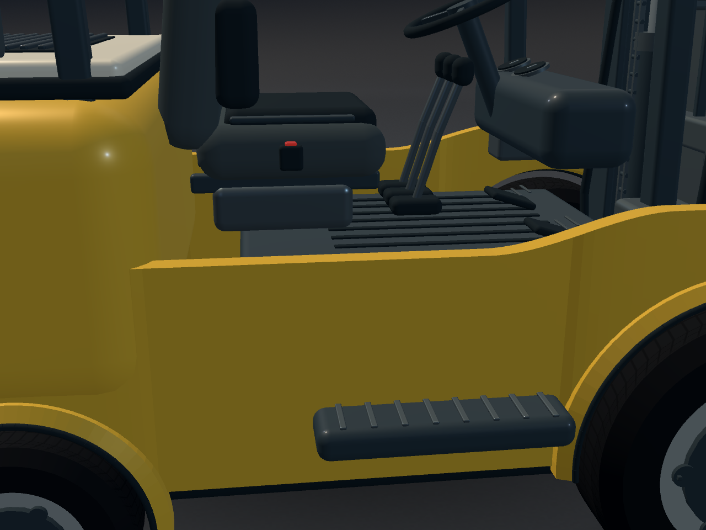
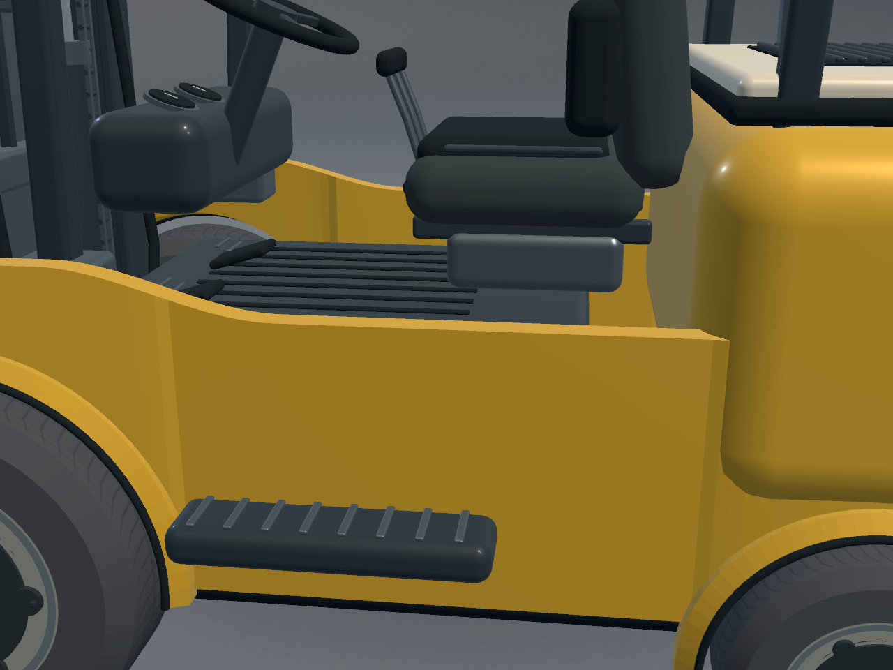
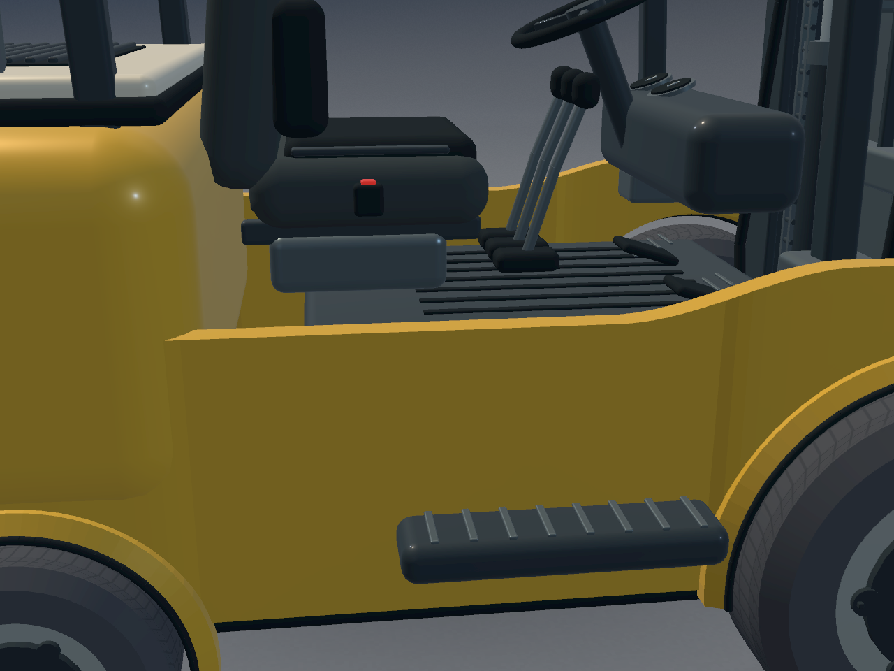
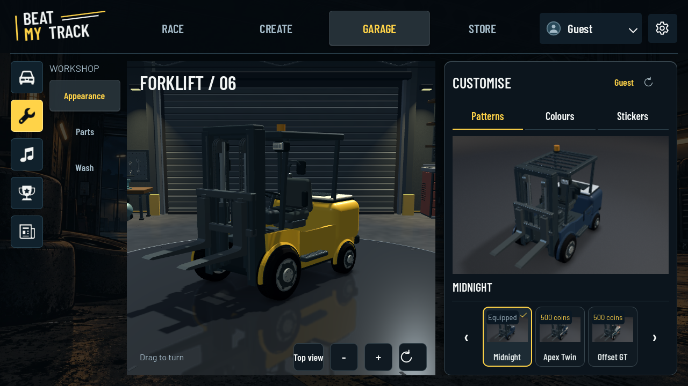
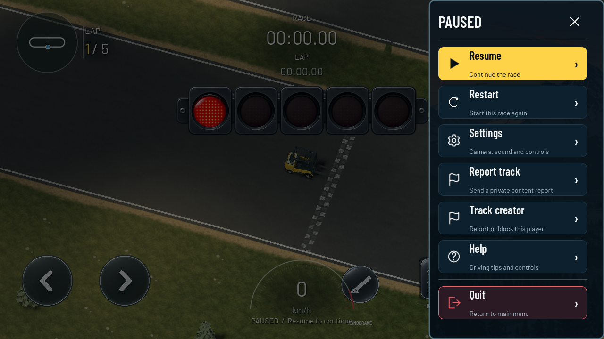

The raised rectangular side panels, black backing frames, handles and four small decorative bolts are removed. The formed steel sides, wheel arches and entry steps remain. Native Godot captures at matching studio poses. Scope and validation · Report








Handling, raised forks and the single rear sticker are retained. No physical-device test was performed.